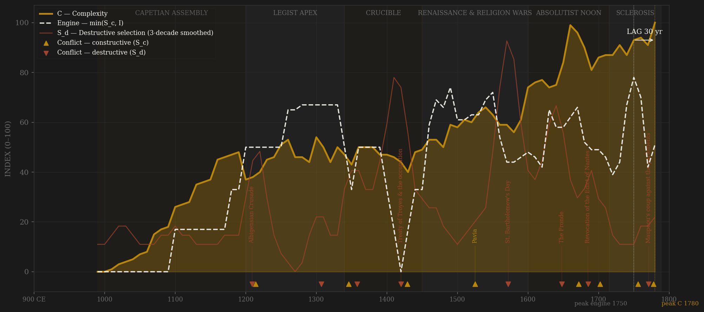
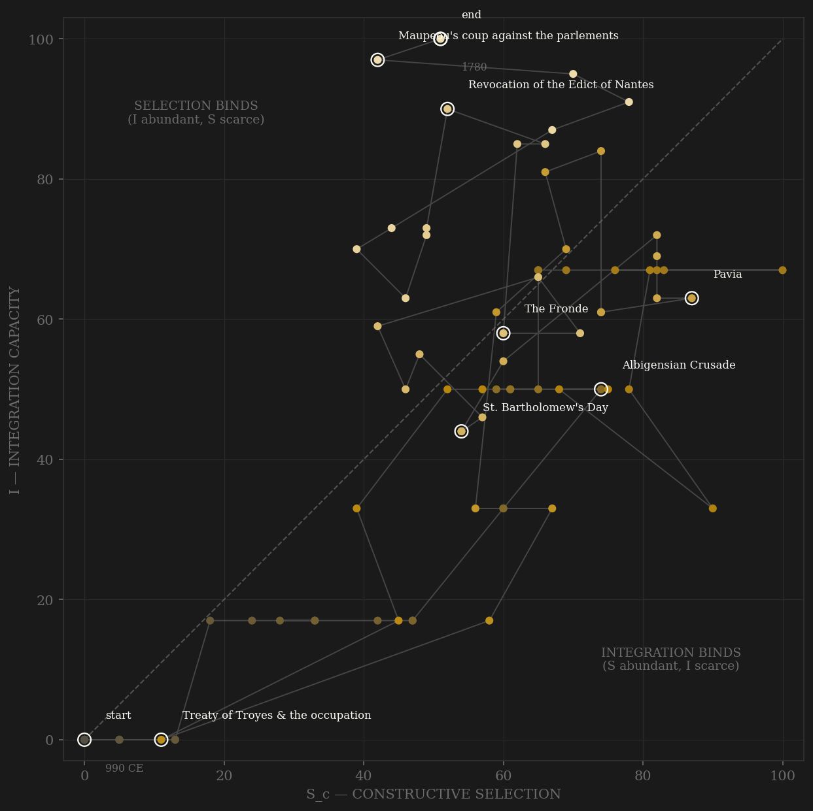

France is the venality showcase — the single best-documented office-sale system in history, and the clearest case of the 'positions become assets' mechanism the theory predicts should kill an engine slowly. The arc opens at zero twice over: the first Capetians rule an Île-de-France postage stamp where the only ladder is the church (Gerbert, a peasant, reaches Reims) and integration is a robber-castellan wilderness. The medieval climb is real and steep — Philip Augustus's salaried baillis, the University of Paris chartered in 1200, Normandy swallowed in 1204, and by the 1290s the legist state: Flote and Nogaret, small-gentry lawyers running Europe's largest kingdom on trained merit, with the Estates-General opening in 1302. Then the fourteenth century burns it down — Crécy, the Black Death, Poitiers, Marcel's Paris, and the Armagnac-Burgundian death-spiral that ends with Paris under an English king and integration literally at zero (the 1420s row). The recovery under Charles VII and Louis XI rebuilds on a new basis: permanent taxation without consent, a standing army, and — from the bureau des parties casuelles of 1522 — offices sold as a branch of revenue. The Paulette of 1604 completes the mechanism: for an annual premium, an office becomes heritable property, and the noblesse de robe becomes a purchased estate that no king can afford to buy back. Everything after is the counter-arc fighting the arc: intendants bypassing officiers, Colbert's academies, the Ponts et Chaussées examinations of 1747 — merit channels grafted onto a proprietary trunk. The v2 engine peaks in the 1750s, when the reforming intendant generation, the world war with Britain, and the parlements' constitutional offensive briefly align — then falls through Maupeou's purge and the aristocratic reaction (Ségur 1781: four quarters of nobility for a commission) while complexity, riding the Enlightenment, the American war won at sea, and the densest road network in Europe, is still rising at the series edge. The lag reads +30 PASS, but read it honestly: C is right-censored — still climbing when the series ends at 1780 — and 1789 is not a data point but the terminal event. The engine had turned down; the output had not; the Revolution arrived in the gap.

The trajectory enters at the true origin — both axes near zero, a king who cannot cross his own domain safely — and spends two centuries climbing the selection axis faster than integration: medieval France never lacked contest (church, schools, the Angevin duel), it lacked coordination. The path crosses into balance under Saint Louis and the legists, then the Hundred Years War drags it violently down and left — the 1420s row sits at the origin again, integration annihilated by partition, the only polity in the sample to touch zero twice. The recovery track is the mirror of the descent: Louis XI and the Renaissance monarchy climb both axes to the 1540s, the Wars of Religion knock the path back down the selection axis (confessional entry-screens, the elite butchering itself), and the seventeenth century executes the great trade: absolutism buys integration by strangling within-rules contest — the path slides right along the integration axis through Colbert while S_c stalls, the inverse of Song China's early vertical climb. The eighteenth century is the diagnostic ending: integration grinds to its ceiling (roads, fiscal penetration, grain-market policy) while selection saws up and down with each reform-reaction cycle — Law, Fleury, the vingtième battles, Turgot broken, Maupeou, Ségur. The series dies in the far upper-left of its late range: I at 100, S_c at 51 and falling — INTEGRATION ABUNDANT, SELECTION BINDING. The phase portrait says what the ledger says: the ancien régime did not die of disorder; it died of a ladder its owners had bought and pulled up behind them.
Coded by locus and target, never by outcome. France supplies three of the study's canonical hard cases. First, the capture rule: Poitiers 1356 and Pavia 1525 each put the King of France in enemy hands, and both stay channel B — the regency governed, the machinery held (the Hannibal rule; contrast Troyes 1420, where the machinery itself was signed over to the invader and Paris crowned an English king: core penetrated, S_d despite external origin). Second, the confessional-amputation rule: St. Bartholomew 1572 is the key exhibit of destructive selection in the whole sample — the crown machinery butchering its own Huguenot elite network in a coordinated national spasm — and the Revocation of 1685 is its slow-motion twin, the state amputating its most productive commercial class by edict, the mirror of the Morisco expulsion. Third, the bloodless-proscription rule (Song Yuanyou precedent): Maupeou 1771 destroyed no lives, only the entire senior judiciary's offices and the constitutional channel they carried — factional proscription without blood still counts. The recurring French signature is the crown destroying its own financiers — Templars 1307, Jacques Cœur 1451, Semblançay 1527, Fouquet 1661 — the state periodically burning its own credit machinery, which is why the E series never stays down for long.
| YEAR | CONFLICT | CODE | CODING RATIONALE |
|---|---|---|---|
| 1209 | Albigensian Crusade | Sd | Crown-sanctioned crusade destroys Languedoc's counts, consulates and tolerated networks — the realm's own southern coordination fabric, S_d under a cross (Pegg; Sumption) |
| 1214 | Bouvines | Sc | Emperor, Flanders and England beaten in one afternoon — the coalition test of the new Capetian state, external locus throughout |
| 1307 | Destruction of the Templars | Sd | The state burning its own bankers — violence against an internal financial machine; first of the crown's financier-destructions (Cœur 1451, Semblançay 1527, Fouquet 1661 follow) |
| 1346 | Crécy & the Hundred Years War opens | Sc | External peer war of crowns (Sumption); catastrophic in the field, but the coordination machinery survives Crécy and even the king's capture at Poitiers 1356 — the Hannibal rule |
| 1358 | Étienne Marcel & the Jacquerie | Sd | Paris seized, marshals murdered in the dauphin's chamber, the Beauvaisis burned — the coordination core physically attacked from inside (key exhibit kept off the charts: its phase-portrait point coincides with the Albigensian circle) |
| 1420 | Treaty of Troyes & the occupation | Sd | The dauphin disinherited, Henry V made heir, Paris under Anglo-Burgundian rule, an English king crowned at Notre-Dame — core penetrated and partitioned: S_d despite external origin (Adrianople rule); the Armagnac-Burgundian massacres of 1418 are its internal face |
| 1429 | Joan of Arc & the reconquest | Sc | Orléans, Reims, Arras 1435, Paris 1436, Castillon 1453 — the expulsion of a rival crown by institutional superiority (compagnies d'ordonnance, permanent taille): external contest won |
| 1525 | Pavia | Sc | The king captured in the field by the Habsburg peer — kept in channel B by the capture rule: the regency governed and the machinery held, unlike 1420 |
| 1572 | St. Bartholomew's Day | Sd | The crown machinery butchers its own Huguenot elite network in Paris and twelve cities — the study's key exhibit of destructive selection by locus (Holt); holds for the Wars of Religion 1562–98 |
| 1648 | The Fronde | Sd | The officer class and the princes in arms against the machinery they co-own, 1648–53 — the wars are S_d; the five thousand mazarinades are channel C and coded there |
| 1672 | Dutch War | Sc | The hegemonic bid against the Triple Alliance and then most of Europe — peak external rivalry of the personal rule, fought beyond the core |
| 1685 | Revocation of the Edict of Nantes | Sd | Dragonnades, temples razed, ~200,000 of the realm's most productive subjects driven out — the state amputating its own commercial class (Scoville): the Morisco expulsion's mirror; the Camisard war of 1702–10 is its suppuration |
| 1702 | War of the Spanish Succession | Sc | The century's maximum external test — Blenheim to Denain, the realm besieged on every frontier and holding; the concurrent Camisard revolt is coded separately as S_d |
| 1756 | Seven Years War | Sc | The world war with Britain lost — Rossbach, Quiberon Bay, Canada and India ceded: peer contest at maximum reach, and the defeat that fed the reform decade |
| 1771 | Maupeou's coup against the parlements | Sd | The entire senior judiciary abolished and exiled by lettre de cachet — bloodless proscription of the constitutional channel (Song Yuanyou-blacklist rule: no blood still counts); restored 1774 |
| 1778 | American War | Sc | The revanche won at sea (Yorktown, Suffren) — external peer contest, at a fiscal cost (~1 billion livres, Necker's loans) that arms the terminal crisis |
| COMPONENT | GRADE | BASIS |
|---|---|---|
| S_c A — Elite-entry (0.40) | ◐ coded, price-anchored | THE VENALITY ARC, coded 0–10/decade: church + Univ. of Paris ladder → Philip Augustus's salaried baillis (Baldwin) → legist state (Strayer) → bureau des parties casuelles 1522 (Doyle, Venality; Mousnier) → PAULETTE 1604: offices heritable = positions become assets (Collins ch.2; Ford, Robe and Sword) → intendant merit-bypass (Bonney) → 1690s office spam as debt market (Bien 1987) → Ponts et Chaussées exams 1747 → Ségur ordinance 1781 & the closed robe caste (Doyle, Origins; Bien). Published office-price series (Bien, Doyle, Mousnier) anchor the arc's shape — measured-ish, hence ◐ not ○ |
| S_c B — External rivalry (0.30 cap) | ○ coded war-years chronology | Angevin contest, HYW (Sumption), Italian/Habsburg-Valois wars (Knecht), Thirty Years War, Louis XIV's coalition wars (Lynn), 18th-c. world wars. Locus-cleaned: the 1420s occupation, Wars of Religion, Fronde and Camisards are S_d, not B. Poitiers 1356 and Pavia 1525 stay B (capture ≠ core penetration). This channel alone = the frozen Sc_v1_combat column |
| S_c C — Within-rules politics (0.30) | ○ coded | Peace of God councils; communes; Estates-General 1302–1614 while summoned (Major) with the 1355–58 Grand Ordinance and Tours 1484 as peaks; provincial estates; parlements' remonstrance politics (Swann; Van Kley); mazarinades 1648–53 (pamphlets = C, the wars = S_d). The 175-year Estates silence 1614–1789 coded to near-zero — the silence is signal: C hits 1 under the personal rule (1673 gag), reopens 1715, and is rising into the censor at series end (compte rendu 1781, Notables 1787, Estates summoned 1789) |
| S_d — Destructive | ○ coded, event-anchored | Albigensian crusade, Marcel/Jacquerie, Armagnac-Burgundian civil war + Paris massacres 1418, Troyes occupation, Wars of Religion (St. Bartholomew 1572 = series max), Fronde, Revocation 1685, Camisards, Maupeou 1771 (bloodless proscription counts); the financier-destructions (Templars, Cœur, Semblançay, Fouquet) scored each time |
| I — Integration | ◐ measured 1440+ · ○ coded spine | Coded ordinal 0.50 (traites internal-customs fragmentation as the NEGATIVE baseline — France's defining integration failure until 1790; Villers-Cotterêts 1539; Cinq Grosses Fermes 1664 = partial fix only (Bosher); Canal du Midi 1681; ponts et chaussées roads; currency unification arc) + inverse Allen Paris wheat 25-yr CV 0.25 (Ladurie/Usher price-dispersion logic, 1440+) + Karaman-Pamuk tax/GDP 0.25 (1500+). Weights renormalize where components are absent — the 1490s→1500s step is partly a component join, flagged in SOURCES.md |
| C — Complexity | ◐ measured + coded culture | Equal-weight mean (≥2 required): Maddison/Ridolfi GDPpc 1276–1780 (model reconstruction — decade wiggles are model output), Paris population log-interp on Chandler/Bairoch anchors (30k→228k→plague crash→560k), Frijhoff university enrolment 1200+ (NaN before — structural absence), coded cultural-infrastructure ordinal (12th-c. renaissance, grand siècle, Encyclopédie, road network) |
| E — Entropy | ◐ measured debasement + yields · ○ coded crises | Allen-Sargent livre tournois silver content 990–1715 → per-decade debasement rate 0.30 (series max: the 1410s, 53→24 g/livre; flat post-1726 stabilization is historically correct) + Allen Paris wheat shock share 0.15 (1440+) + Homer-Sylla/Velde-Weir yields 0.15 (1522+) + coded crisis ordinal 0.40 (famines 1031/1315/1693–94/1709, bankruptcies 1557/1648/1770, JOHN LAW 1720 — the paper-money supernova, carried by the coded channel since the silver series ends 1715) |
| R — Population | ◐ anchors / ○ interpolation | Millions, raw, modern-borders convention: Dupâquier & McEvedy-Jones anchors (6.5M in 1000 → 19–20M at 1340 → 12.5M at 1400 — the Black Death + war collapse → 21.5M at 1700 → 27.6M at 1780), cross-checked against Maddison/Clio points in the Deep History master |
80 decade rows (990–1780), built STRAIGHT to S_c definition v2 (contestability composite, 0.40 elite-entry / 0.30 external hard cap / 0.30 within-rules — amendment defaults, no deviation) by scripts/build_france_sicre.py, 2026-07-06; per-decade channel scores, rationales and citations in data/raw/france/coding_ledger_v2.csv; full component audit in components_audit.csv; Sc_v1_combat = channel B alone per the straight-to-v2 convention. THE VENALITY-ARC NOTE: channel A is the study's type case of 'positions become assets' — offices purchasable from 1522 (bureau des parties casuelles), heritable from 1604 (Paulette), a purchased estate (noblesse de robe) by 1650, a closed caste by 1781 (Ségur); office prices are published (Bien, Doyle, Mousnier) so the arc is price-anchored ◐ though the channel is coded. BOTH DEFINITIONS REPORTED: v2 engine 1750 → C 1780 = +30 PASS; v1 combat-only engine 1670 → C 1780 = +110 PASS. TWO HONESTY CAVEATS. (1) RIGHT-CENSORING, as on the British page: smoothed C is still rising at the last row (95.5 at 1780, its maximum) — the series ends at 1780 and 1789 is the terminal event, not a data point; both lags are lower bounds (the true C peak of the ancien régime is unobservable because the Revolution truncated it). The v2 ENGINE is NOT censored — it peaks 1750 and falls through Maupeou and Ségur into the end: the engine had turned down while the output was still climbing, which is precisely the theory's pre-collapse signature. (2) KNIFE-EDGE ENGINE PEAK under v2: smoothed engine reads 71.7 (1750) vs 69.7 (1480) vs 68.0 (1540) vs 67.0 (1290–1320) — a 2-point wiggle in coded ordinals relocates the peak by centuries and flips the verdict PASS→LONG (+30/+300/+240/+470). The invariant across every candidate reading: the engine precedes the output — all lags positive under both definitions. Measured spine: Deep History master v015 (Maddison/Ridolfi GDPpc 1276+, Allen Paris wheat prices & 25-yr CV 1431+, Allen-Sargent livre silver content 990–1715, Chandler/Bairoch Paris population, Frijhoff enrolment, Karaman-Pamuk tax/GDP, Homer-Sylla + Velde-Weir yields). Pre-existing data/raw/france/composite_SICRE_modern.csv (1700–2020, post-revolutionary polity) inspected, used only as a directional cross-check on the 1700–1780 overlap, and left untouched — see SOURCES.md. Rebuild: build_france_sicre.py, then polity_report.py --slug france.